RecMem：把长期行为递归压入固定用户记忆
论文链接：arXiv:2611.17921
作者：Haoyi Hu、Gaoyang Guo、Yunjia Xi、Wen Chen、Weiwen Liu、Jian Wu、Yuning Jiang、Weinan Zhang。第一作者主机构为上海交通大学，合作机构包括阿里巴巴淘宝天猫集团；前两位作者共同一作。首次提交：2026年11月13日。PDF署名为NeurIPS 2026论文，本轮以作者公开原文核验方法和数值。记录日期：2026年11月16日。代码状态：本轮未核验到独立公开实现，不把论文里的实现描述等同于代码已开源。
RecMem研究的是ID行为序列驱动的下一物品预测：把远期历史留在固定大小的向量状态里，近期行为仍以原始物品粒度进入HSTU解码器。读这项工作时，要同时看三个问题：状态是否固定、压缩后还剩多少预测信号、递归更新是否在已测长历史中保持稳定。
不断增长的交互历史包含有用的长期偏好，但直接交给生成式推荐模型会使上下文、存储和计算成本持续增加；压缩器既要保留对下一次推荐有用的信息，又要避免分段递归更新的误差随历史增长失控。
1. 背景和问题
长序列推荐的直接动机，是用户当下的行为只暴露了兴趣的一小部分。近期窗口容易识别正在发生的购买或浏览意图，却可能遗漏较长周期的品类偏好、稳定的消费习惯以及此前已经发生过的物品接触。对生成式序列模型而言，这些信号以物品嵌入或行为token的形式成为上下文。历史增长之后，模型不仅要读更多输入，还要在每次下一物品预测时反复处理大量已经见过的过去。RecMem不是主张历史越长就必然越好，而是问：在近期窗口固定的前提下，能否用一个持续更新的状态，为远期历史保留额外预测价值？这个问题把推荐效果与用户状态预算放到了同一个设计面上。
论文中的生成式推荐，具体落在HSTU系列的序列建模与下一物品打分，不应自动理解为逐层生成语义ID。作者把用户历史拆成归档前缀和最近后缀。前缀只能经过记忆状态进入预测，最近后缀保留逐物品分辨率。这样做给出了明确的实验检验：只要记忆里真的留下了归档信号，同样拥有最近二百次行为的模型，就应比单独训练的近期模型更好；若只是多了一条计算支路或更多参数，近参数匹配控制就可能削弱这一解释。把问题落实在这些可检验对照上，比笼统宣称“模型有长期记忆”更有意义。论文没有把可解释兴趣标签、外部知识库或自然语言摘要作为记忆的必要形式，状态本身是任务监督学出来的连续向量。
已有路线各自解决了资源问题的一部分。固定窗口方法直接丢弃旧行为，预算容易控制，但排除掉的内容可能恰好包含下一次交互的线索。历史检索先挑出少量过去行为，再与近期输入一起预测，保留了物品级证据，却受检索策略和候选数量约束；检索没有选中的内容无法被后续模型利用。分段摘要方法将过去各段变成用户token或键值状态，减少每段的信息量，但只要每段都留一份摘要，状态总量仍随段数增长。本文对PHSTU的比较正是围绕这点展开：短期内它的解码上下文可能与RecMem接近，持久保存的历史状态却并不相同，因此不能只按单次输入token数把两者当作同预算系统。
另一类记忆学习依赖全上下文教师，把教师生成的状态或表示用作压缩目标。教师可以提供有价值的训练信号，但需要额外推理，也可能继承教师的最大历史窗口。RecMem选择让推荐目标直接训练压缩器，不引入一个外部教师。这里“没有教师”不意味着没有辅助训练支路：流式一致性仍会构造打包历史与顺序历史两种处理方式，打包支路停止梯度后，给顺序支路提供分布对齐目标。两者是同一模型内部共享参数的不同计算路径，性质与一个独立预训练的大教师不同。理解这层区别，有助于判断后续复现需要多少模型、怎样安排训练内存，以及哪些额外成本只在训练时存在。
作者将设计目标分成空间不变、语义保真和终身可演化。空间不变最容易严格验证：当槽位数和槽位维度固定，保留状态的坐标数不会随历史增加，预测端再加一个固定近期窗口，解码上下文也固定。语义保真则不能靠维度证明，它意味着被保存的信息仍对推荐任务有用，必须通过主结果、近期基线、检索基线以及远期交互分组来测量。终身可演化还要进一步区分两个层面：一次次写入后状态数值是否稳定，以及预测质量是否在长时间范围内崩溃。范数投影能防止向量幅值无限增长，不能保证不同槽位继续保存不同内容，也不能保证所有旧兴趣都被保留。
这三个目标之间存在实际张力。有限槽位必然是信息瓶颈，推荐监督会优先保存与当前训练任务相关的特征，未必保存未来所有任务需要的内容；较强遗忘有利于控制误差，却可能覆盖罕见但有用的远期兴趣。保留近期原始行为，是对这种压缩损失的结构性补偿：即时意图不必全部经过瓶颈，记忆主要承担更慢变化的历史背景。论文在MerRec上看到大截断召回保留得更多、小截断排序损失更明显，正提示这种取舍。该现象不等于固定记忆与原始长序列等价，而是说明在一定容量和数据分布下，部分预测价值可以用更短上下文交换出来。
还需明确RecMem研究范围与真实线上用户记忆系统的距离。本文输入是物品ID交互序列，记忆每完成一段才更新，预测依赖当前状态与最近行为。它没有同时处理跨设备写入冲突、迟到事件、行为删除、模型升级时状态兼容、远程存储和请求排队等生产问题。论文系统测量也刻意排除了这些部分，因此固定状态和热预测成本不能直接变成端到端服务收益。对实际模型链路最有参考价值的是这套分解：先证明归档历史提供增量，再识别记忆写入、冷构建、热读取的不同成本，最后才讨论是否接入已有召回或排序链路。这样既不低估持续状态的作用，也不会把一个离线模型实验扩展成已完成的生产方案。
论文的训练历史长度与评估跨度也服务于不同问题。训练用前一千二百条，让模型学习如何从有限展开中写入；标准评估继续向后逐位置预测，长历史实验再把同一模型运行到一万条。后一过程增加的是推理时经过的历史，不是把训练样本量同步扩大。若新增行为真的改变了兴趣，状态需要在不重新训练的情况下吸收它；若只因评估用户更活跃而更容易预测，则总体分数也可能稳定。把训练尺度、可见上下文和推理跨度分别记清楚，是理解作者“终身”措辞的必要条件。
2. 方法
2.1 历史分段与分叉编码解码
令完整历史由按时间排序的物品组成，最近窗口长度固定为二百，剩余前缀按最长二百条交互切成若干段。初始记忆是零矩阵，每次编码一段，再把结果写回同样大小的槽位。最终预测只读最后的记忆和近期窗口。前缀在切分时右对齐，首段可以不足最大长度；较短首段用有效位置mask处理，不能把填充物品当成真实兴趣。这个约定也使训练与冷构建面对相同分段方式：
符号解释：$S_t$是第$t$段归档行为，$U$是更新器，$M_t$是处理该段后的记忆，$K$是归档段数，$F$是推荐解码器，$X_{\mathrm{rec}}$是近期原始行为。该结构把远期历史访问路径压到一个明确接口：预测器看不到归档原文，只能使用压缩结果，因而推荐损失必须通过记忆回传给编码端。
编码器和解码器共享底部八层，各自再接八层专用上层。默认结构一共有二十四个独立骨干块，每条激活路径为十六层；共享参数只计一次。编码时将旧记忆、当前段嵌入与可学习查询槽位拼接，读取查询位置的输出得到候选记忆。查询银行在各个段间复用，提供固定的读出位置，不是为每个历史段新建一组永久token；因此段数增加不会新增槽位：
符号解释：$E$是物品嵌入映射，$Q$是固定数量的查询token，$[\cdot;\cdot]$表示拼接，$|_Q$表示抽取查询位置。当前段能读取旧记忆，查询能读取两者，所以新候选不是当前段的独立摘要，而是带旧状态条件的压缩结果。解码器则让近期token读取全部记忆，并对近期行为保持因果注意力。
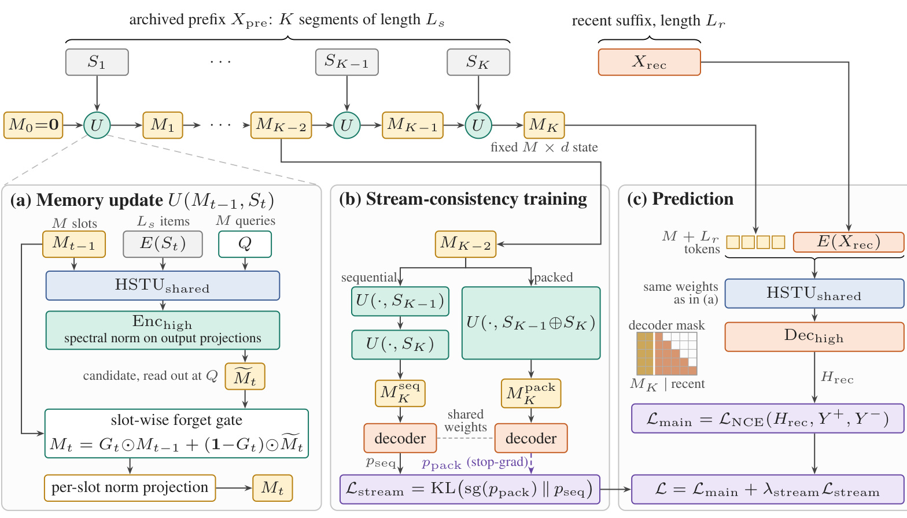
Figure 1的顶部时间轴先把历史分成归档段和最近后缀，表示持久状态只在归档段间传递，最近后缀仍单独送入预测端。左侧更新器将旧记忆、物品段和查询槽位接到共享层与编码专用层，候选状态随后经过逐槽遗忘门与范数投影，图中这一顺序决定了控制对象是最终状态，而非仅仅控制输入嵌入。中间的两条支路从同一倒数第二个状态出发，一条连续写入末两段，另一条将两段打包后写入一次；它们都用相同近期窗口和相同解码参数产生推荐分布，打包分布停止梯度。右侧预测器的输入是最终记忆加近期嵌入，输出进入推荐损失。蓝色共享块说明编码与解码不是两个完全独立模型，但绿色编码上层和橙色解码上层仍带来专用计算。图里固定的是记忆坐标数和解码上下文，顶部经过多少个更新器仍取决于冷构建时的历史长度；因此这张框架图同时解释了为什么热预测可以与历史长度脱钩，以及为什么首次构建不能免费完成。中间辅助支路仅用于训练，线上缓存更新不必每次重复打包对照。
2.2 槽位遗忘门与有界写入
作者让每个槽位有一个标量遗忘门，而不是让每个维度各自学习一组时间系数。门由当前段的有效物品嵌入均值产生，填充位置不参与求平均；全填充段直接保持旧状态。候选记忆保留前面的上下文融合，遗忘门则控制新旧状态各占多少。门的输入不直接拼接目标物品，避免更新状态时使用尚未发生的下一交互标签；训练监督只通过损失决定参数：
符号解释：$\bar s_t$是屏蔽padding后的段均值，$W_g,b_g$为可学习参数，$g_t$有$M$个元素，$d$是槽位维度，$G_t$把每个槽位的标量扩展到该槽所有维度。门值越大，旧状态保留越多；它反映当前段条件下的更新幅度，并不是显式的兴趣类别标签。
符号解释：$\odot$为逐元素乘法，两个权重相加为一。旧状态有一条直接残差通道，而新候选也依赖旧状态，因此更新器整体导数还包含候选分支，不能仅凭门值在零到一之间就证明收缩。门控保留通道与任务驱动候选共同构成记忆写入，实际是否保持槽位差异要由消融诊断验证。
每个槽位随后投影到半径为十的欧氏球，编码专用上层的输出投影使用谱归一化，位置编号在每个段内局部重新开始。前者约束幅值，后者正则化部分矩阵，局部位置则避免历史越长位置索引越大。两种数值约束作用的位置不同：投影直接处理记忆行向量，谱归一化仅施加在编码专用上层的输出矩阵，不能混写成所有层都被约束：
符号解释：$M_t^{(m)}$为第$m$个槽位，$c$为范数上限。超出球面的向量被沿原方向缩回边界。该操作控制数值尺度，不保证语义信息不丢失，也不证明所有方向的状态扰动都衰减；论文将后一性质作为理论假设单独陈述。
2.3 推荐监督、流式一致性与缓存推理
训练从零记忆开始，先对一部分历史段做无梯度burn-in，得到较真实的中间状态，detach后再对后续段做带梯度递归。课程训练在总段数不变时，把有梯度的段数从一逐渐增加到五。推荐主损失作用于近期窗口各位置的错位下一物品标签，负样本来自物品池。所有近期位置都参与下一步预测，因而不仅最后一个物品的标签能训练记忆；这里的多位置监督仍严格按照时间错位，不能将目标token自身暴露给对应预测位置：
符号解释：$H_{\mathrm{rec}}$是近期各位置的隐藏状态，$Y^+$为相应下一物品正例，$Y^-$为采样负例。旧历史没有旁路，所以主损失会让压缩器保存对当前推荐目标有用的信号；它不要求重建全部历史，也没有证明记忆保留了所有原始语义。
一致性目标只比较末两段：顺序处理两次与拼接处理一次都从同一状态开始，打包支路重复段内位置编号，并以组合后的因果mask允许后一段读取前一段。相同候选集合上的输出分布用于KL。候选集合保持相同很重要，否则分布差别还会混入候选采样变化，无法归结到处理顺序；停止梯度也避免两条支路通过共同移动把对齐任务变得含糊：
符号解释：$p_{\mathrm{pack}}$是打包处理得到的分布，$p_{\mathrm{seq}}$是顺序递归分布，停止梯度仅让后者接受一致性梯度。选择末两段使监督接近预测，且限制额外打包长度。这是局部训练代理，不能把训练时两个短段的输出接近外推成任意长前缀的状态接近。
线上保留当前记忆，只有新交互凑满一段才触发一次编码更新。近期窗口仍随行为滚动；末位置隐藏向量与候选嵌入内积产生分数。冷用户状态缺失时，必须从首段开始顺序构建。完成一段之后的记忆能反复复用，未满段的新行为仍保留在近期原始序列中；状态持久化与近期窗口维护是两条关联但不能互相替代的路径：
符号解释：$h_T$是近期最后位置隐藏状态，$e_j$是候选物品嵌入，$M$为记忆槽位数，$L_r$为近期长度。默认二者为十六和二百，故预测输入二百一十六个token。这个表达式没有消除全物品候选打分成本；固定上下文是历史侧预算结论，不能顺带推成目录规模无关。
2.4 条件稳定性与预测瓶颈
理论比较同一历史的逐段处理状态与一次打包状态。作者要求完整更新器对旧记忆一致收缩，且任意打包前缀与下一段满足近似半群一致性，分别以$\rho<1$和$\varepsilon$控制。第二个条件覆盖任意已经打包的前缀，不只是训练里比较的最后两个短段；如果前缀越长组合差距越大，统一误差假设便不成立。递推得到：
符号解释：$e_k$是前$k$段后两种状态的Frobenius距离，$\rho$衰减既有差距，$\varepsilon$限制重新分组引入的差距。上界不含无限增长的段数因子，但它依赖两个对所有相关状态与输入成立的条件。输出分布KL下降不等于状态距离下降，因为解码器可能将不同状态映射到类似分布；论文对此有明确保留。固定容量命题只证明$M d$坐标与$M+L_r$输入不随段数增长，预测保真仍由后面的离线数据支持。
3. 实验结果
3.1 MerRec主结果与上下文预算
MerRec来自Mercari二手交易平台，论文描述其覆盖五百多万用户。采用时间顺序：每个用户最前一千二百次交互用于训练，标准评估在位置一千二百至一千九百九十九逐步预测下一物品。近期窗口和归档段长都为二百，嵌入维度二百五十六、八个注意力头。优化器为AdamW，学习率为一点五乘十的负三次方，权重衰减零点一，梯度裁剪一，预热后余弦衰减。报告的是Recall和NDCG百分数，表中零点几的差值要先辨别是百分点还是相对比例。文中更精确的增量按未四舍五入数据计算，不能要求它与两位小数表格相减完全一致。
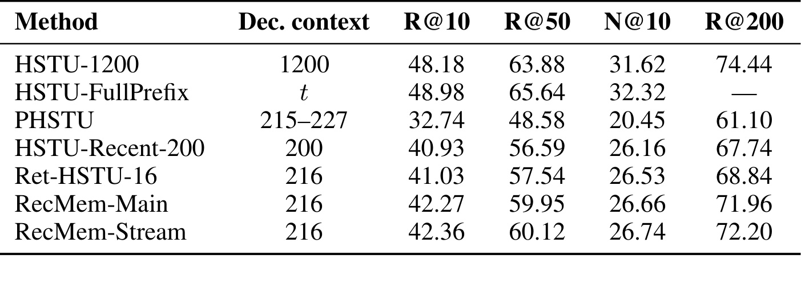
Table 1以方法为行、解码上下文和四个推荐指标为列。RecMem-Stream的输入为二百一十六个token，Recall@10为四十二点三六，Recall@200为七十二点二零；HSTU-1200分别为四十八点一八和七十四点四四。因此“保留百分之八十七点九”和“保留百分之九十七点零”说的是相对于长上下文参考的指标比例，绝不是模型在两项指标上都超过原长序列模型。小截断召回的损失更大，说明压缩后较难把目标排得足够靠前；大截断下候选覆盖保留较多。与PHSTU比较，Stream的两项召回提高约九点六二和十一点一零个百分点，但两者状态组织和训练实现不同，不能把差值全部归因到单个遗忘门。更贴近问题定义的控制是最近二百条行为模型：它的Recall@10为四十点九三、Recall@200为六十七点七四，加入固定记忆后的提升较温和，却更直接支持归档历史提供额外信号。该表也显示与完整增长前缀模型仍有明显差距，固定状态的价值是一组质量与预算取舍。
检索控制同样有二百一十六个解码token：用冻结近期模型的最后状态检索归档里的十六次物品出现，再恢复时间顺序放到近期窗口前。它不去重物品ID，只允许访问近期窗口之前的历史，查询与归档都不能读取目标和未来。其Recall@10为四十一点零三，Recall@200为六十八点八四，说明单纯检索也能用到旧历史。RecMem相对它的四指标增量，作者给出一点三三二、二点五七五、零点二一零和三点三五七个百分点。这个对照支持固定软记忆优于该检索配置，未覆盖所有检索器、检索容量或训练方式，更不能推出检索普遍无效。
3.2 参数控制与远期交互的预测价值
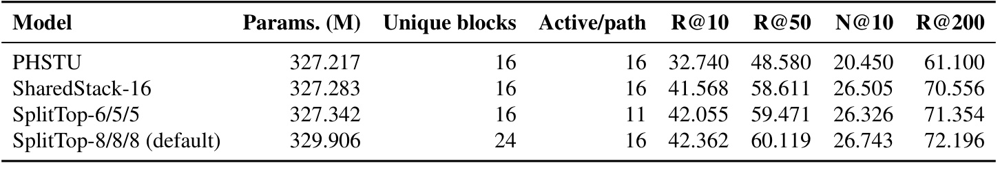
Table 4把参数量、独立骨干块数、单路径激活层数和推荐指标并列，从而拆开“多参数”和“更合适的记忆结构”。PHSTU约三亿二千七百二十二万参数，SharedStack-16约三亿二千七百二十八万，后者只用一套十六层骨干同时做记忆更新和解码，Recall@10仍从三十二点七四到四十一点五六八。SplitTop-6/5/5只有十六个独立块，每条路径十一层，Recall@10达到四十二点零五五。默认分叉结构有二十四个独立块，但由于物品嵌入等参数占比，独立块增多没有使总参数按二十四比十六等比例增加，总量约三亿二千九百九十一万。三种RecMem控制都优于PHSTU，削弱了“只因为更多参数”的解释；默认模型的额外提升则仍可能包含专用上层容量收益。该结果没有做到所有训练计算、优化难度和结构因素完全匹配，能支持的是在作者提供的近参数预算下，记忆路线的优势仍然存在。共享块的梯度同时承受编码和解码监督，也意味着参数数目相近并不保证优化轨迹等价。
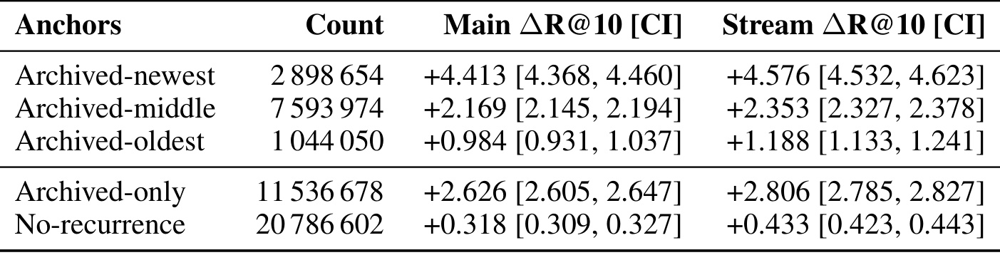
Table 5使用匹配的用户和预测位置，不改变模型训练，只把评估锚点按目标物品过去出现的位置分类。“仅归档出现”要求目标曾出现在最近二百条以外，且最近窗口里没有出现；再按最后一次历史出现属于可见前缀的最新百分之二十、中间百分之六十、最旧百分之二十分组。Stream相对独立训练近期模型的Recall@10增量分别为四点五七六、二点三五三和一点一八八个百分点，最远组的百分之九十五用户聚类bootstrap区间为一点一三三至一点二四一，正向范围较明确。越远增量越小，既可能反映信息衰减，也可能受各组任务难度与行为频次分布影响，不能直接当作遗忘曲线。没有任何目标重复出现的锚点也提高零点四三三个百分点，提示模型不只在简单回忆旧物品，但该表不能识别具体存储了哪些偏好。工程上最有用的是这种分组口径：要先排除近期泄漏，再检查旧目标被记住的增量，不能只凭总体均值证明长期兴趣有效。
独立的推理清零实验还显示模型依赖记忆状态，但该实验使用六十四维模型，不能和主表二百五十六维混用。长为两千的推理范围里，完整状态的Recall@10为四十一点三五，清零后为二十点二三。这种干预既删除历史信息，也让训练后模型遇到异常状态分布，因此下降幅度不应被当成记忆相对于“重新训练的无记忆模型”的净贡献。表五的独立近期控制与这项清零实验回答的问题不同，两者共同阅读才不容易夸大作用。
3.3 一万交互、独立种子与稳定性诊断
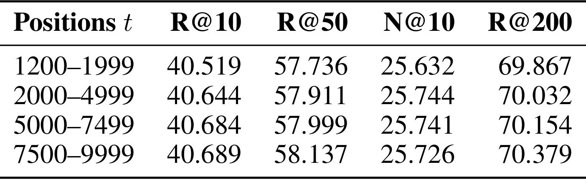
Table 8固定六千四百四十二名用户，使用同一个已训练Stream checkpoint，且不重新训练，从一千二百位置一直评估到九千九百九十九。四个区间的Recall@10在四十点五一九至四十点六八九之间，Recall@200在六十九点八六七至七十点三七九之间，记忆始终十六槽，解码上下文始终二百一十六。分区间均值没有出现持续崩溃，是对已经观察到的历史范围的实证支持。这里的人群与主表并不相同，所以不能把四十点五一九与主表四十二点三六直接相减，然后声称模型随着历史变长掉了两个点；也不能把轻微上升解释为记忆存储能力随时间无限增强。固定人群控制减少了人群变化的干扰，但用户在更晚位置仍可能有不同的物品重复率和预测难度。作者另行运行五千与一万范围的评估，在共有三千八百个位置上得到完全相同的逐位置结果，支持实现的一致性，却并非无限历史或跨分布稳定性的证明。
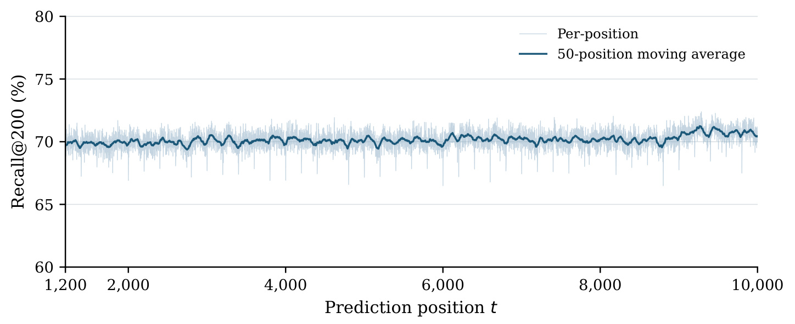
Figure 2横轴是预测位置，从一千二百走到一万附近，纵轴为Recall@200百分比；浅色线是每个位置的结果，深色线为五十位置的居中移动平均。图中局部抖动围绕大约七十附近展开，平滑曲线整体没有随更新次数下降，补充了表八的区间统计，避免仅靠少数区间均值掩盖短期异常。居中平均在边界只用可用位置，因此它是事后可视化，不能作为在线预测信号。曲线也没有画出所有用户独立的遗忘轨迹，少量用户的严重丢失可能被大样本均值掩盖。作者把该图限定为预测行为诊断，而非状态空间定理的直接验证，这一限定应保留：预测指标不变，既可能因为有用信息被稳定保留，也可能因为近期窗口足以支撑较多样本，或者样本难度变化抵消了状态损失。后续若迁移到工业场景，应继续按活跃度、历史主题与新旧兴趣分组，而不能只复现一条平滑总体曲线就结束验收。
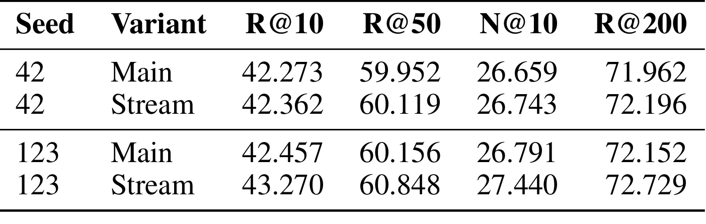
Table 9列出种子四十二和一百二十三各自的Main与Stream。四个指标在两组配对里方向都为正，但Recall@10的提升一组为零点零八九个百分点，另一组为零点八一三，差了约九倍。这个差异说明辅助一致性不是一个固定幅度的增益，主表那个很小的数值也不应被当作所有训练都稳定复现的效果。两次独立训练给出了方向证据，却不足以可靠估计方差，更没有单独报告配对统计显著性。Main本身已经包含分叉结构、门控写入和推荐监督，所以Stream相对Main只反映增加一致性项后的差异；不能把RecMem相对PHSTU的全部提升归到流式KL。若训练成本有限，这张表提示应先复现Main作为结构基线，再固定其它配置检查一致性权重的收益，并记录负例，而不是默认辅助项一定必要。相同checkpoint的长历史测试与这里的不同seed训练也必须区分，它们分别验证推理延展和训练重复性。若要归因辅助目标，配对训练需要保持负样本采样与数据顺序尽量一致，并报告收益波动。
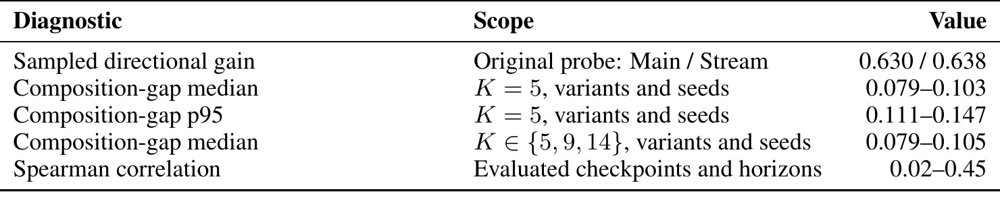
Table 10把状态扰动和分段重组两个层面的数值放在一起。原方向探针在二十个验证batch、每条五段递归的五个位置，用有限差分估计随机方向增益，Main和Stream分别为零点六三零和零点六三八，说明采样到的方向通常被衰减。随机方向估计没有搜索最坏方向，不能代替完整雅可比谱范数，更不能认证全状态输入空间的统一收缩。重组差距按槽位数与维度乘积的平方根归一化，在已测配置中中位数约零点零七九至零点一零五；表里这些范围是跨模型、种子和历史长度单元的观测范围，不是置信区间，也不是理论中的统一误差上限。输出KL下降与状态差距下降的Spearman相关点估计只有零点零二至零点四五，且平均方向在不同种子并不一致。这个负面的关联证据尤其重要：一致性项能作为预测训练信号，却尚不能证明它通过缩小状态半群误差实现收益。
3.4 冷构建、增量更新与热预测
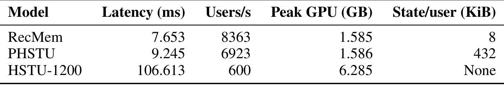
Table 11在历史长度两千、batch六十四时比较热状态准备好的完整预测，包括解码、全目录候选打分和top二百选择。RecMem延迟七点六五三毫秒，PHSTU九点二四五，HSTU-1200一百零六点六一三；吞吐用batch除以延迟得到，分别约八千三百六十三、六千九百二十三和六百用户每秒。这是合成物品ID、随机初始化架构、单GPU、bfloat16下同步计时的模型计算，不能和训练后在线请求的服务吞吐等同。峰值GPU分配内存约一点五八五GB，也不是每用户持久状态八KiB的另一种写法；前者含计算时工作集，后者只计十六乘二百五十六的低精度记忆矩阵。PHSTU状态四百三十二KiB反映它随保留段数增长，HSTU没有这类递归状态，但仍要处理输入和计算缓存。表格支持热模型计算的预算优势，却排除数据读取、网络、远程状态存储和请求调度，缺少这些环节就不能宣称端到端延迟缩短相同比例。原文仅称单GPU，未在这张表中给出可用于跨硬件归一化的设备型号，因此也不据此比较别处GPU上的毫秒数。
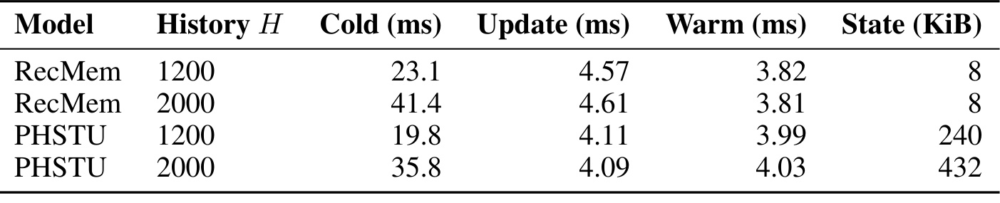
Table 12进一步分开冷构建、单段更新和热预测。在两千交互的历史范围，RecMem冷构建四十一点四毫秒，更新四点六一毫秒，热预测三点八一毫秒；一千二百历史时冷构建二十三点一，更新四点五七，热预测三点八二。固定状态没有让首次读取全部归档的工作消失，冷构建明显随段数增加，而状态已存在时的更新和预测接近稳定。PHSTU对应冷构建三十五点八、更新四点零九、热预测四点零三，意味着RecMem并非所有阶段都更快，写入环节还有额外成本。表内更新计时每次从相同预更新状态开始，一次更新在计时外提交后才测热预测，这避免不断重复写入导致不同历史状态混入同一组计时。持久状态不含参数、物品目录嵌入和原始近期窗口，线上容量规划不能只拿八KiB乘用户数就视为完整内存需求。实际收益还取决于缓存命中率、每用户查询与更新比例，以及模型更新时能否复用既有状态。
3.5 写入机制、槽位容量与训练课程
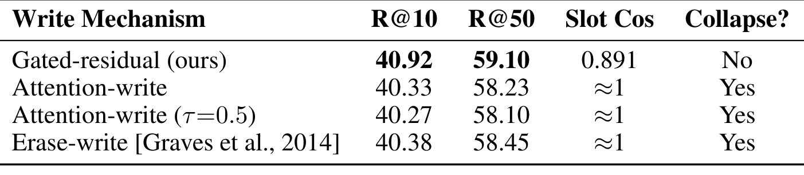
Table 13比较门控残差、注意力写入、温度为零点五的注意力写入，以及类似神经图灵机的擦写机制。门控残差Recall@10为四十点九二，其余三种在四十点二七至四十点三八之间，差距约零点五四至零点六五个百分点。槽位平均余弦相似度的差别比准确率更显著：门控为零点八九一，其它接近一，作者将后者解释为有效槽位坍缩，即十六个槽几乎重复同一内容。这项结果支持在该实验设定里保留残差写入路径，而不能推出零点八九一就代表十六个槽已经高度正交或拥有独立可解释主题。余弦相似度衡量表示方向，不能直接量化信息容量；相近方向的不同幅值或微小差异仍可能被解码器使用。准确率提升和多槽差异一起构成证据，更适合用作训练健康度检查，而非单一成功阈值。复现时需要保持初始化、门控与范数约束配置一致，避免将任一写入公式的简化版当作原方案。
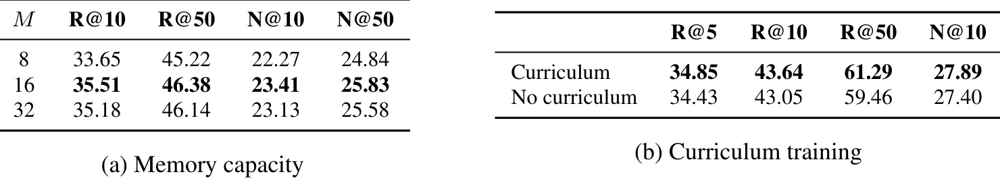
Table 14原本就包含并列的两个子表，左边扫槽位数，右边比较课程训练。左表使用段长和近期窗口都为五十的设定，十六槽在已测八、十六、三十二槽中四个指标最好，Recall@10比八槽高一点八六个百分点，但三十二槽略低，说明增加存储不自动增加有效预测信息。这个实验不等于在主配置二百长度下已证明十六是全局最优，也不能用左表三十五点五一与主表四十二点三六直接比较。右表课程训练的Recall@50为六十一点二九，无课程五十九点四六，增益一点八三个百分点；它反映训练递归长度逐步展开的帮助，但该消融的具体分母与主表仍要分别记录。两个子表共同提示容量与优化相互影响：过多槽位可能需要不同训练长度、学习率或正则，而课程在总段数固定时改变反向传播路径。作者没有给出跨所有预算的联合搜索，因此这些数值应作为已测局部设计依据，不能写成对所有长期推荐的固定参数建议。
4. 总结
RecMem最清楚的贡献，是给远期行为提供了一个大小严格固定、又能直接接受推荐监督的用户状态接口。它保留近期原始行为，压缩归档前缀，因而将即时意图与长期背景放在不同分辨率上处理。主表、同上下文检索控制、近参数控制与归档重复目标分组分别排查不同替代解释，组合起来比单个大幅提升更有说服力。对需要长期持久状态的推荐系统，这种证据组织尤其值得复用：先验证状态提供了独立增量，再把增量放回小截断、大截断和资源预算中判断。压缩后的模型仍明显落后完整长历史参考，是否值得换取更短输入，取决于目标环节对候选覆盖和顶部排序精度的权衡。
局限首先来自数据与任务范围：只有MerRec上的ID推荐和HSTU骨干，不能据此推断多模态内容理解、广告转化或新用户任务同样受益。其次，稳定性定理是条件命题，随机方向扰动和局部重组诊断不验证全局收缩；流式KL与状态距离的相关性也并不稳定。第三，一万交互结果来自同一checkpoint和固定活跃用户人群，说明观察范围内没有总体崩溃，没有证明每位用户都不遗忘或无限时间可扩展。第四，训练独立种子只有两个，一致性收益幅度变化明显，尚不足以形成稳健的方差与显著性结论。第五，系统测量是随机初始化架构与合成输入的模型计算，不包含远程状态读写和生产调度；八KiB是状态载荷，不是完整每用户服务占用。第六，作者没有可靠复现Rec2PM-O，因此没有与其经验优势的定量比较，不能把这一缺口写成胜出。
后续复现应优先做三组具体核验。第一组固定最近窗口、候选目录、训练样本和参数计数，重跑近期模型、历史检索、Main与Stream，检查记忆增量究竟集中在重复物品还是更广的偏好迁移；除总体召回外，还要保留最旧归档和无重复锚点的用户聚类区间。第二组在真实有状态链路中记录冷构建概率、状态缓存命中、每次更新与预测比例，分别测模型、存储和网络时延，再算端到端吞吐；如果状态经常失效，热预测优势可能被重建抵消。第三组增加种子、时间范围和分布变化，在相同用户集合上测槽位相似度、最坏方向敏感度近似和预测分组，检查稳定总均值是否掩盖小群体遗忘。若模型权重升级，则还需单独研究旧记忆兼容或重构策略，不能默认旧状态在新编码器下仍具有同样语义。
我的判断是，RecMem已经给出了一个可明确复现的固定预算方案，以及相对周全的证据边界；它最适合作为“归档历史如何进入生成式推荐”的结构基线。若将它接到具体推荐模型，应该先界定状态更新时钟、近期窗口和监督目标，避免把用户兴趣向量当成通用、永久、无损的事实库。记忆的有效性来自特定训练目标和评估分布，固定尺寸只是接口性质。尤其在候选量、训练目标或物品嵌入发生变化后，历史状态可能需要重建；模型参数与用户状态不能被当作独立、永远兼容的两个版本。保留这些区别，才能同时利用作者展示的模型计算优势和归档增量，又不把理论条件、有限长历史实证和生产表现混为一个已经解决的问题。